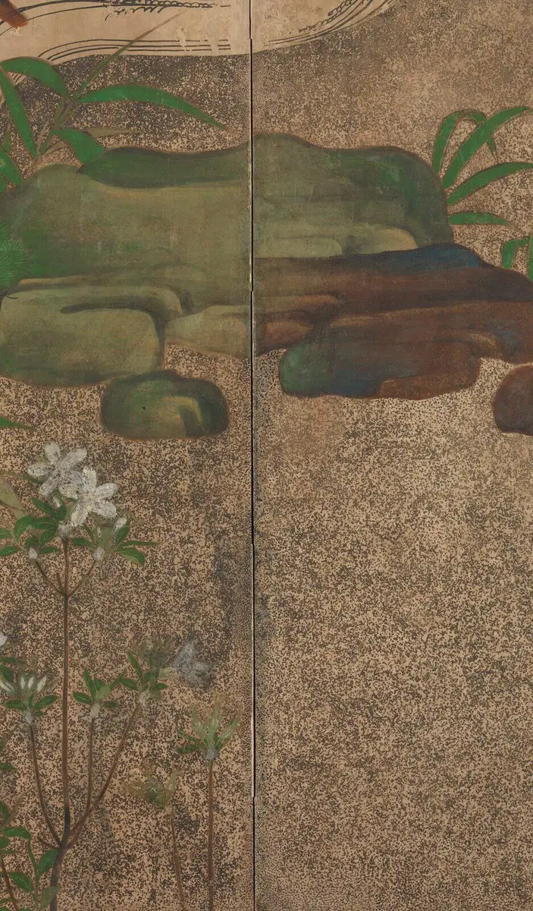

MORIKOSHA / CONTACT
はじめの一歩は、
短いご相談から。
何を頼めばよいか、まだ決まっていなくても大丈夫です。会社やお店のこと、いま気になっていることをお聞かせください。
質問に答えるだけで、相談のメール文ができます。送る前にご確認いただけます。
メールで直接：info@morikosha.com

A SMALL FIRST STEP
まずは、この3つ。
- 会社・お店の名前
- ご希望の制作物
- 相談したいこと
直接メールでも承ります。
info@morikosha.com
ご相談だけでお申し込みにはなりません。
料金・制作範囲は、ご依頼前に確認します。